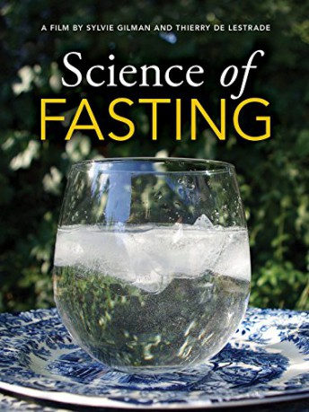

#10708 Fasten und Heilen
Alternativ: Le jeûne, une nouvelle thérapie? (Englischer Titel)
 
 IMDB-Wertung: 8.2 / 10
IMDB-Wertung: 8.2 / 10  Metascore: 0
Metascore: 0 
While life expectancy is increasing in Western countries, cases of diabetes, hypertension, obesity and cancer are increasing, and the use of medication has exploded. Does this mean that in order to live to a ripe age we are condemned to swallow more and more drugs? What if there was another way? For half a century, in Russia, Germany and the U.S., doctors and biologists have been exploring a different therapeutic approach: fasting.The results are amazing. Soviet researchers have provided a body of clinical studies of exceptional wealth ...only published in Russian, and thus unknown in the West. Young biologists from the University of Los Angeles have overturned conventional wisdom and used molecular biology to demonstrate the powerful effects of fasting. These researches suggest a wide-ranging potential, which could include treatments for the disease of the century, cancer. If these scientists are right, maybe our approach to disease and treatment will need a rethink.
Jahr: 2012
Dauer: 54 Minuten
FSK:
Land: Frankreich Studio: ARTETonspuren:
Untertitel:
Auflösung: 720p (1280x712) Größe: 2938 MB
Genre: Dokumentation
Regisseur: Sylvie Gilman, Thierry de Lestrade
Drehbuch: Sylvie Gilman, Thierry de Lestrade
Soundtrack: Hélène Blazy
Darsteller:
- Natalia Bataeva als Herself - Medical Superintendent Sanatorium Goryachinsk
- Olya Bazarova als Herself - Patient
- Antonina Nikitiuk als Herself - Patient
- Natacha Kiseliova als Herself - Patient
- Yuri Nikolayev als Himself - Psychiatrist (archive footage)
- Valentin Jurevich als Himself - Nikolayev's Son
- Valéry Gurvich als Himself - Psychiatrist
- Alexey Kokosov als Himself - Pneumologist
- Valéry Maximov als Himself - Gastroenterologist
- Sergeij Osinin als Himself - Pneumologist
- Jürgen Bahl als Himself - Patient
- Pauline Valiquer als Herself - Patient
- Stefan Drinda als Himself - Rheumatologist
- Francoise Wilhelmi de Toledo als Herself - Director Buchinger Klinik
- Andreas Michalsen als Himself - Chief Physician Charité Berlin
- Yvon le Maho als Himself - CNRS Strasbourg
- Valter D. Longo als Himself - Biogerontologist USC
- Tanya Dorff als Herself - Oncologist Norris Center Hospital
- David I. Quinn als Himself - Oncologist Norris Center Hospital
- Nora Quinn als Herself - Cancer Patient
- Sylvie Gilman als Herself - Narrator
Datei: X:\Dokumentationen\Dokus(A-Z)\Fasten und Heilen (2012, FSK, 1280x712).mkv seit 22.02.2019
Festplatte: HD Serien(SU-Z)+Dokus+Musik
 Es gibt insgesamt 34 Filme in der Gruppe 'Dokumentationen\Dokus(A-Z)'
Es gibt insgesamt 34 Filme in der Gruppe 'Dokumentationen\Dokus(A-Z)'